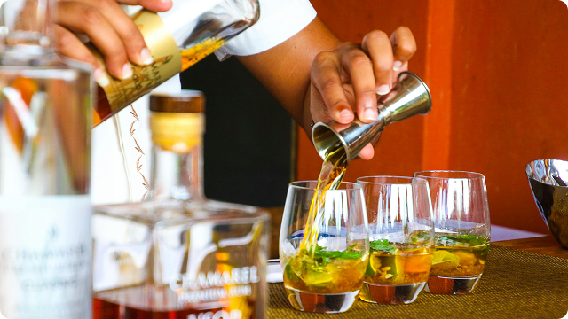
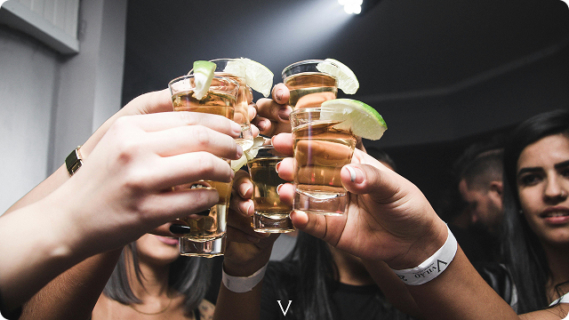

O Bar Baridade nasceu de uma ideia simples: unir o prazer de uma boa bebida à leveza de quem sabe aproveitar a vida com estilo, mas sem pressa. Criado por amigos apaixonados por música, gastronomia e boas histórias, o bar rapidamente se tornou um ponto de encontro para quem busca mais do que apenas um copo cheio: aqui, cada drink tem personalidade e cada noite tem um charme próprio.
Desde sua inauguração, o Bar Baridade mistura sofisticação e descontração na medida certa. O ambiente combina iluminação aconchegante, música ao vivo e uma carta de drinks autorais que brinca com o paladar (e com a ironia). Nosso lema é simples: “Elegância o suficiente pra disfarçar o terceiro drink.”
A casa valoriza o artesanato em cada detalhe: dos ingredientes selecionados à curadoria musical, tudo é pensado para criar uma experiência memorável. No palco, bandas locais e regionais trazem estilos que vão do jazz e MPB ao rock clássico e blues moderno — sempre com o toque Baridade de autenticidade e bom humor.
Mais do que um bar, o Bar Baridade é um refúgio para quem aprecia o prazer de estar presente. Um lugar para celebrar encontros, brindar conquistas e rir das pequenas tragédias cotidianas — com um bom drink na mão, é claro.
